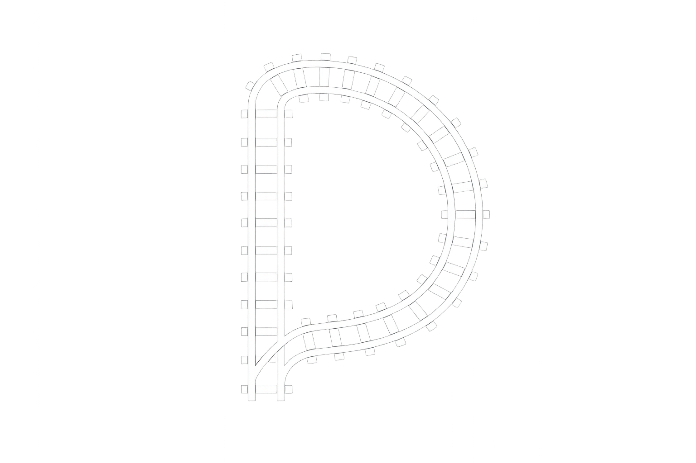

Reproducible analysis · public evidence

Derailable
Derail assumptions.
What Derailable Publishes
Derailable publishes reproducible analysis, datasets, visualizations, and research in R and Python, turning messy operational data into signal that teams can measure, explain, and act on.